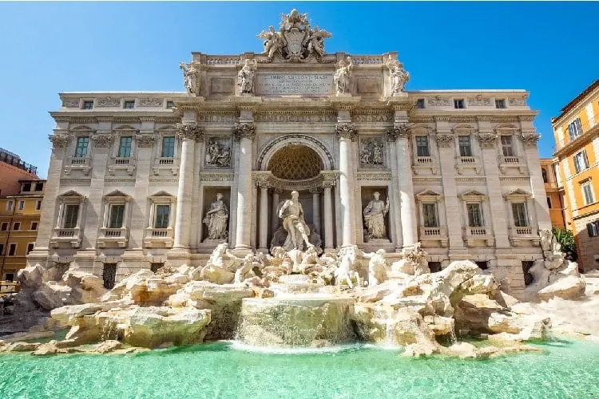
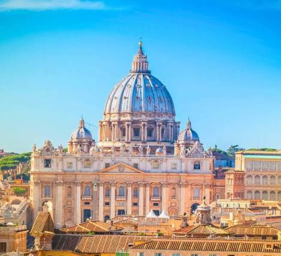
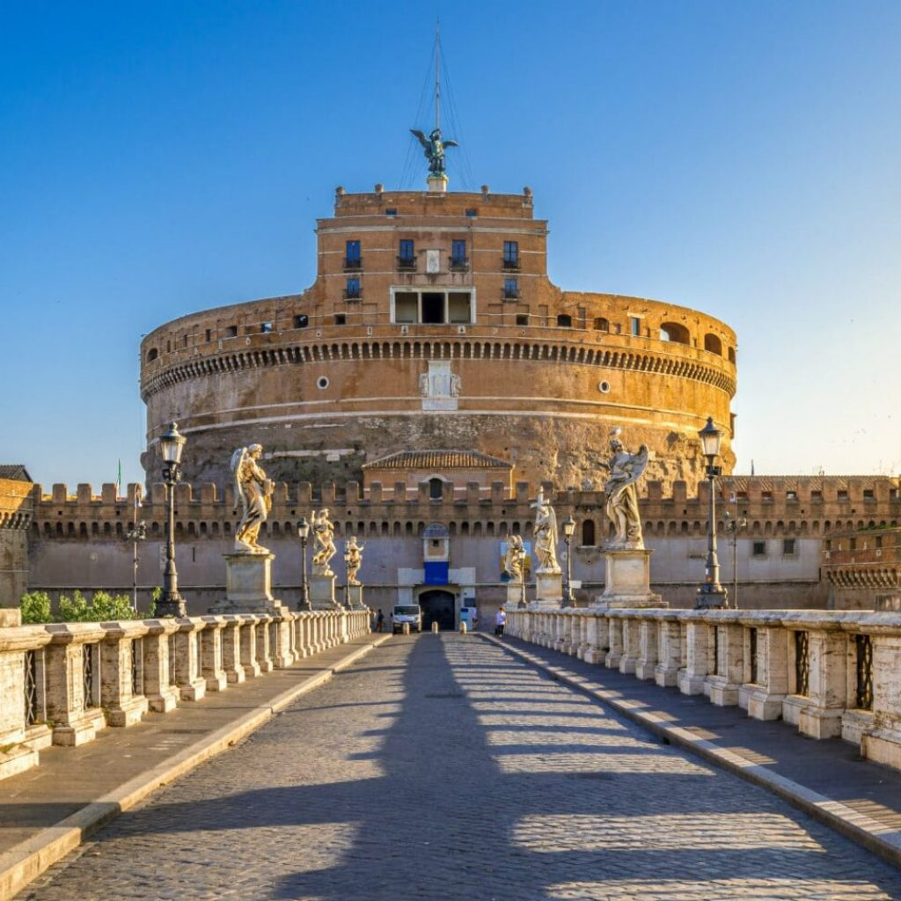
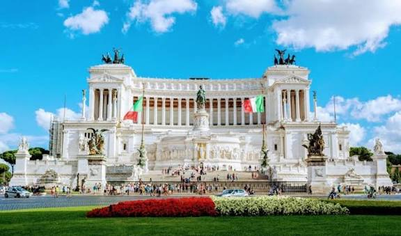

Multimedia
Nesta página encontra conteúdos multimédia.
Fotografias







Vídeo
Poesia
Entre sete colinas ergue-se a história,
Onde o Tibre corre lento a murmurar,
No Coliseu ainda ecoa a antiga glória,
Sob a luz dourada do entardecer no ar.
Nas águas de Trevi lança-se um desejo,
Cada pedra guarda um segredo milenar,
Em cada praça um encanto que eu vejo,
Roma eterna, impossível não te amar.